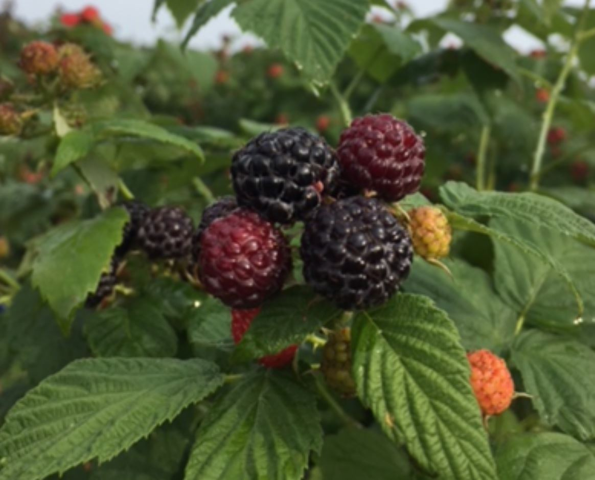

상품명 : 더덕
원산지 : 전라북도 진안
진안더덕은 사포닌이 많이 들어 있어 약용 효과를 기대할 수 있다.
구매링크
상품명 : 생강
원산지 : 전라북도 완주
완주생강은 통통하며 육질이 좋은 것이 특징으로 저장성이 높고 맛도 우수하다.
구매링크

상품명 : 복분자
원산지 : 전라북도 복분자
고창복분자는 황토에서 자라 미량요소가 풍부하고 당도가 높으며, 서해에서 부는 해풍의 영향을 받아 향이 짙은 것이 특징이다.
구매링크